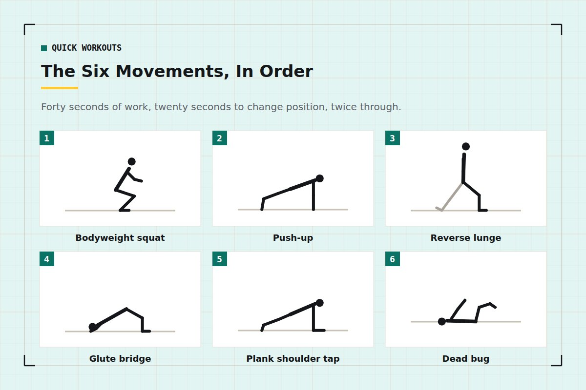
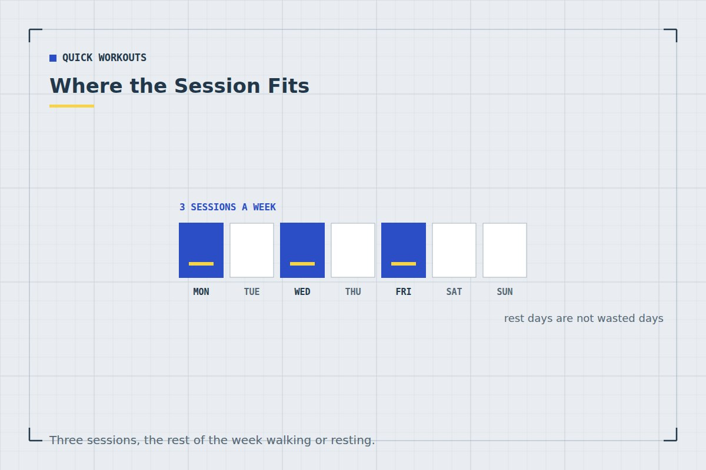

Quick Workouts & Plans
15-Minute Full-Body Workout at Home (No Equipment)
Six movements, three rounds, one timer. This is built to be genuinely hard for fifteen minutes rather than pleasantly busy for forty — because fifteen minutes is what most people can actually protect on a Tuesday.
Most "quick" home workouts are quick in the way a budget airline is cheap — the advertised number leaves out the setup, the warm-up, the four ad breaks and the two minutes you spend deciding whether you can be bothered. This one is fifteen minutes end to end: ninety seconds of warm-up, three rounds of six exercises, and you are done.
It trains every major muscle group, needs no equipment, involves no jumping, and fits in roughly the space of a bath towel. I have run some version of it for about three years, mostly in the gap between getting a child to sleep and losing the will to stand up.
Who this workout is for
This is a beginner-to-intermediate full-body circuit. It suits you if you can stand up from a chair without using your hands, get down to the floor and back up again, and hold a push-up position against a kitchen counter for twenty seconds or so. If any of those are currently out of reach, that is genuinely fine — start with the seated and standing variations in the 4-week beginner plan and come back to this in a month.
It is not a fat-loss programme, a six-pack protocol, or a replacement for a doctor's advice if you are managing an injury or a chronic condition. It is a repeatable strength session short enough that you will still do it on a bad week.
If you are pregnant, recovering from surgery or injury, or living with a heart, joint or blood-pressure condition, talk to your doctor or a physiotherapist before starting this or any new exercise routine. Stop immediately if you feel chest pain, dizziness or sharp joint pain — ordinary muscular burning is expected, sharp pain is not.
The workout at a glance
Six exercises. Forty seconds of work, twenty seconds of rest, straight through. That is one six-minute round. Do three rounds with a one-minute break between them and you are at roughly fifteen minutes including the warm-up.
| # | Exercise | Work | Rest | Trains |
|---|---|---|---|---|
| 1 | Bodyweight squat | 40s | 20s | Quads, glutes |
| 2 | Push-up (any incline) | 40s | 20s | Chest, shoulders, triceps |
| 3 | Reverse lunge | 40s | 20s | Legs, balance |
| 4 | Glute bridge | 40s | 20s | Glutes, hamstrings |
| 5 | Plank shoulder tap | 40s | 20s | Core, shoulders |
| 6 | Dead bug | 40s | 20s | Deep core |
The order is deliberate. Legs and pushing alternate so that nothing fails purely from local fatigue, and the two hardest core movements sit at the end where a slight drop in quality costs you least. If you want the reasoning behind session ordering in general, I have written it up in how to structure a home workout.
The 90-second warm-up
Do not skip this to save ninety seconds. Going straight into loaded squats from a cold desk-shaped body is how people end up with a tweaked lower back and a three-week break.
- 30 seconds — march on the spot, bringing knees up and swinging the arms.
- 30 seconds — ten slow bodyweight squats to a comfortable depth, no pause.
- 30 seconds — ten arm circles backwards, then five slow push-ups against a wall.
That is enough to raise your core temperature and get some blood into the tissues you are about to use. There is a longer version in the 5-minute home warm-up for mornings when you feel especially stiff.

The six movements, in order
-
Bodyweight squat — 40 seconds
Feet a little wider than your hips, toes turned out perhaps fifteen degrees. Push your hips back as though reaching for a chair behind you, keep your chest up, and go down as far as you can without your lower back rounding. Drive up through the middle of your foot.
Cue that fixes most of it: imagine spreading the floor apart with your feet. It stops the knees collapsing inward without you having to think about your knees at all.
-
Push-up — 40 seconds
Pick a height that lets you complete at least six clean repetitions: the floor, a sofa arm, a stair, a kitchen counter, or a wall. Hands slightly wider than your shoulders, body in one line from ear to ankle, elbows travelling back at roughly forty-five degrees rather than flaring straight out.
If you are not sure which height to start at, the six-stage ladder in push-up progressions for absolute beginners has the graduation criteria for each step.
-
Reverse lunge — 40 seconds
Step backwards, not forwards, alternating legs. The back knee lowers towards the floor while the front shin stays close to vertical. Stepping back rather than forward puts noticeably less shear through the front knee, which matters if your knees are the reason you stopped running.
Hold a wall or a doorframe with one hand if your balance is not there yet. That is a scaling option, not a failure.
-
Glute bridge — 40 seconds
On your back, knees bent, feet flat and close enough that your fingertips brush your heels. Push through your heels and lift your hips until your body makes a straight line from knee to shoulder. Squeeze hard at the top for a full second, then lower under control.
The one-second pause is what makes this exercise worth doing. Without it, most people bounce through forty seconds and feel nothing.
-
Plank shoulder tap — 40 seconds
Start in a push-up position with your feet wide — wider feet make this considerably more stable. Lift one hand and tap the opposite shoulder, then swap. The entire goal is to not let your hips rotate. Slow taps with still hips beat fast taps with a swinging pelvis every time.
-
Dead bug — 40 seconds
Lie on your back, arms pointing at the ceiling, knees bent at ninety degrees above your hips. Slowly lower your right arm overhead and straighten your left leg towards the floor, keeping your lower back pressed flat. Return, then swap sides.
If your lower back lifts off the floor, you have gone too far. Shorten the range until it stays down.
The session that gets done at 70% quality beats the perfect one you keep rescheduling. Fifteen minutes is not a compromise — it is the length that survives contact with a real week.
Making it easier or harder
The circuit stays the same. What changes is the difficulty of each movement, which is how you keep using it for years rather than weeks.
If it is too hard right now
- Cut to two rounds instead of three and add the third when two feels manageable.
- Change the intervals to 30 seconds work / 30 seconds rest.
- Raise your push-up surface, shorten your squat depth, and do glute bridges with both feet planted rather than any single-leg version.
If it has become too easy
- Move to 45 seconds work / 15 seconds rest, then to four rounds.
- Slow the lowering phase of every rep to a three-second count. This is the single cheapest way to make bodyweight training harder without any equipment.
- Progress the movements themselves: feet-elevated push-ups, split squats instead of lunges, single-leg glute bridges, and long-lever dead bugs.
A systematic review by Schoenfeld and colleagues found that lighter loads taken close to failure produced muscle growth comparable to heavier loads, provided the effort was high.2 With bodyweight training you cannot add plates, so proximity to failure — through tempo, range and rest — is your main lever.
How often to do it
Three times a week, with at least one day between sessions, is the sweet spot for most people starting out. Four is fine once it feels routine. Every day is not better: muscle adapts during recovery, not during the work itself.
The World Health Organization recommends that adults do muscle-strengthening activity involving all major muscle groups on two or more days a week, alongside 150–300 minutes of moderate aerobic activity.1 The UK's NHS gives the same strength guidance.3 Three sessions of this circuit clears the strength half of that comfortably. For the aerobic half, walking counts, and so do the low-impact options in no-jump cardio.

Four mistakes that waste the session
1. Treating the rest as optional
The twenty seconds is not padding. It is what lets you produce real effort in the next forty. People who run this circuit continuously end up doing fifteen minutes of moderate cardio instead of six sets of strength work, which is a different and less useful workout.
2. Chasing rep counts
Forty seconds of twelve controlled squats beats forty seconds of twenty-two bounced ones. Nobody is counting. Quality is the variable that determines whether you get stronger.
3. Picking a push-up height by ego
If your form falls apart at rep four on the floor, you are training your lower back, not your chest. Go to the counter. You will progress to the floor faster from an incline you can actually control — this is the whole argument of the progression guide.
4. Judging the session by how sore you are
Soreness tracks novelty far more than it tracks progress. Your first week will hurt, your sixth week will not, and the sixth week is when you are actually getting stronger. I have gone into the evidence on this in DOMS: why you're sore and what actually helps.
Where to go next
If you want this session slotted into an actual week rather than done at random, the 4-week home workout plan builds around it. If your problem is the doing rather than the knowing, start instead with how to actually stick to a home workout habit.
Frequently asked questions
Is a 15-minute workout long enough to do anything?
Yes, if the effort is high enough. The WHO's strength guidance specifies frequency and muscle groups, not session length.1 Three fifteen-minute sessions a week clears that bar. The research on training close to failure suggests effort matters more than duration or load.2
Can I do this workout every day?
Better to do it three or four times a week with rest days between. This circuit trains every major muscle group, and adaptation happens during recovery. If you want to move on the other days, walk or do light mobility work.
Will this help me lose weight?
It burns a modest number of calories, but weight change is driven mostly by overall diet and daily activity rather than any single session. The stronger case for it is that resistance training helps preserve muscle while you lose fat.
What if I cannot do a full push-up?
Raise your hands. A counter, a sofa arm or a stair makes it the same movement at a lower percentage of your bodyweight. Pick a height allowing six to ten clean reps, and lower it over the coming weeks.
Do I need a mat?
No. A folded towel under your back and knees makes the bridges and dead bugs more comfortable on a hard floor. Since nothing here involves jumping, you do not need a mat for noise reasons either.
How do I know if I am getting fitter?
Count your reps in round one of exercises one and two, and write the number down. If those numbers drift upward over six weeks at the same tempo, you are progressing. More on this in tracking progress without a gym or a scale.
Sources and further reading
- World Health Organization. WHO Guidelines on Physical Activity and Sedentary Behaviour. 2020.
- Schoenfeld BJ, Grgic J, Ogborn D, Krieger JW. “Strength and Hypertrophy Adaptations Between Low- vs. High-Load Resistance Training: A Systematic Review and Meta-analysis.” Journal of Strength and Conditioning Research, 2017;31(12):3508–3523. PubMed.
- NHS. Physical activity guidelines for adults aged 19 to 64.
- Mayo Clinic. Exercise intensity: How to measure it.
Comments
Comments are not enabled yet. Add a hosted comment embed (Disqus, Commento, Giscus) inside this container when you are ready.